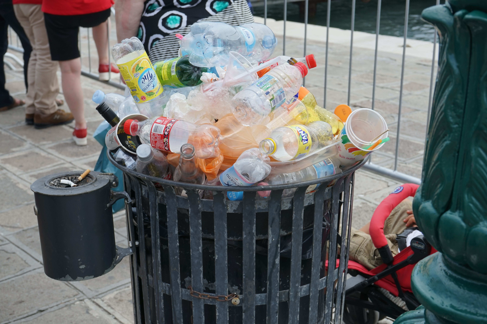

I am moderately nearsighted. From afar this trash can looked like an art piece made of used water bottles, with a nice color combination. This made me think of the creation of mythology and folklore - the incidental, piecemeal and collective creation of art;